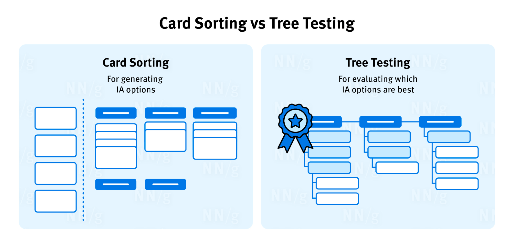

Card sorting and tree testing are specialized UX-research methods used to design and evaluate information architecture (IA). These methods are often confused by newcomers to IA due to their similar goals of enhancing site navigation and content structure. However, they serve distinct purposes and employ different techniques.
Card sorting is a research method where participants place individually labeled cards into groups according to criteria that make the most sense to them. It is used to discover users' mental models for how content should be grouped and categorized.
For example, in a card sort for an e-commerce site, participants might group products like "T-shirts," "Jeans," and "Dresses" under a category called "Clothing," while grouping "Laptops," "Tablets," and "Smartphones" under a category called "Electronics."
Limitations of Card Sorting:
A tree test evaluates a hierarchical category structure, or tree, by having users find the locations in the tree where specific resources or features can be found. It is used to validate a proposed or existing navigation structure by testing the findability of content.
For example, in a tree test for a university website, participants might be asked to find the location of "Application Deadlines" or "Course Catalog" within the site's navigation structure.
Limitation of Tree Testing:
| Card Sorting | Tree Testing | |
|---|---|---|
| Purpose | To generate ideas for organizing content | To evaluate an existing or proposed navigation structure |
| Process | Participants organize cards into groups | Participants navigate through an established hierarchy of content |
| Common Tool | Optimal Sort | Treejack |
| Type of Methodology | Discovery | Evaluative |
Both card sorting and tree testing are complementary research methods that serve distinct purposes when designing an effective navigation and content structure. Using card sorting early in the design process helps researchers uncover users' mental models and generate ideas for organizing content. Tree testing, on the other hand, is used later to evaluate the findability and usability of a proposed or existing navigation structure.
Knowing when to use each method helps researchers get the most out of their users and make optimal design choices. Both methods ultimately help researchers develop a navigation and content structure that aligns with user expectations and has strong findability, ensuring a positive user experience.